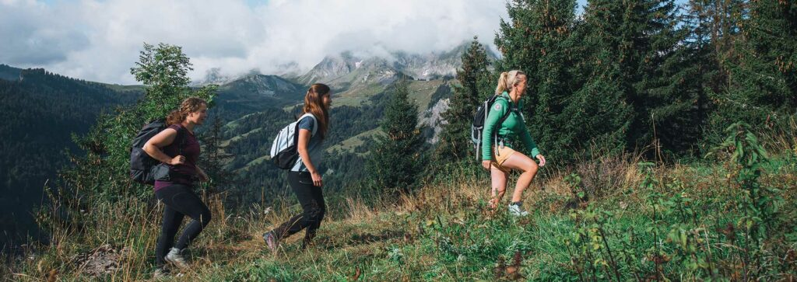

Sandrine Coulaud
Sorties faune et flore, marmottes, chamois, astronomie, sommets, activités familiales.
Adresse :
977 route de la Gardette
73590 La Giettaz
Des balades familiales aux sorties accompagnées, découvrez La Giettaz et La Clusaz à pied, avec des professionnels locaux.
Voir les contacts
Sorties faune et flore, marmottes, chamois, astronomie, sommets, activités familiales.
Adresse :
977 route de la Gardette
73590 La Giettaz
Randonnées pédestres, balades à thème, raquettes et sorties encadrées par les guides et accompagnateurs des Aravis.
📞 04 50 63 35 99
📱 06 14 11 58 68
✉️ laclusaz@guides-des-aravis.com